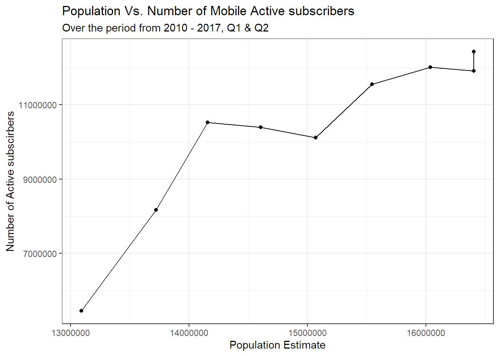
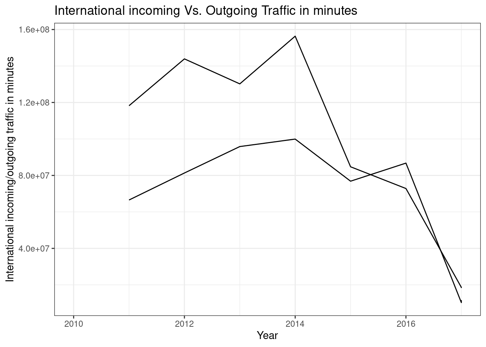
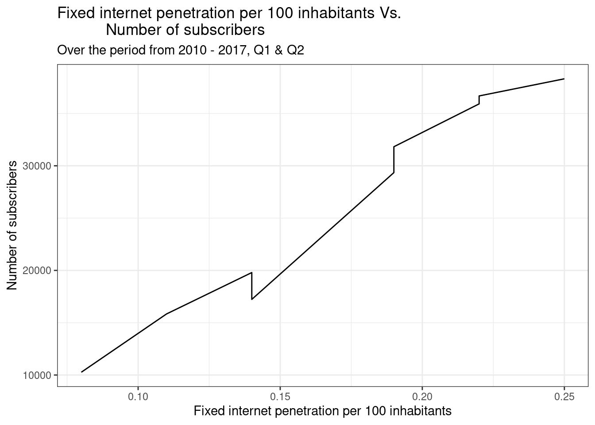
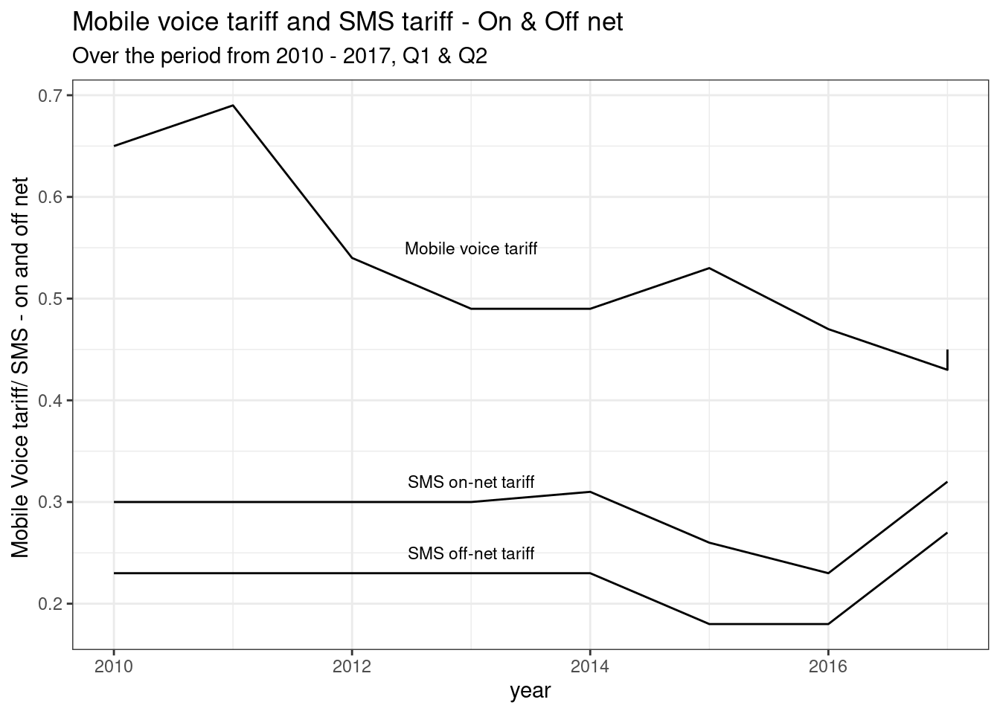
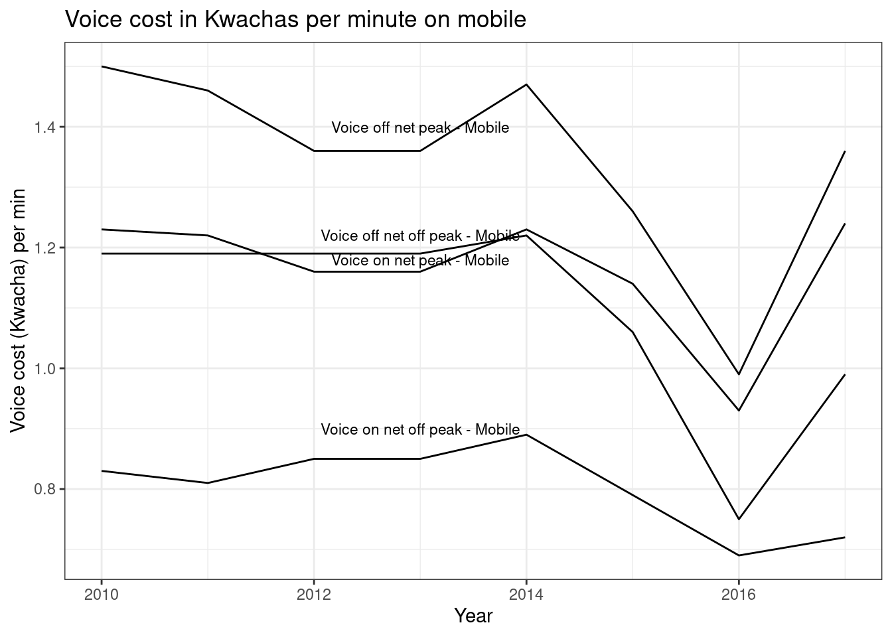

In this post, I take an Exploratory Data Analysis (EDA) of the mobile phone and internet user data statistics for Zambia. Making use of the Zambia Information and Communications, Technology Authority (ZICTA) data. I will walk through the data on the subscriber base, the user traffic and the cost differentials among the three mobile operators, these being: Airtel, Zamtel and MTN Zambia. In addition, internet usage and the operational data on Internet Service Providers(ISPs) will be used.
Prerequisites
For this analysis, I will mainly use the following packages. The beauty with the R language is that as a modular language, meaning it is fully extensible with add-on packages. I will make use of the ggplot2 for visualising the data; dplyr, which is the package made to seamlessly handle data transformations, will be used to tweak the data to match the objectives of the analysis. The other packages are readr for data import.
# the packages can be installed running the following command
# install.packges("ggplot2", "dplyr", "readr", "plotly")
library(ggplot2)
library(dplyr)
library(readr)
theme_set(theme_bw())Data
The data used in this analysis can be found on the ZICTA website. Since the data on the ZICTA website is not in a downloadable format. I had to turn to Microsoft Excel, with its option to mine the data from the web. The data on-line is in a format which is not very helpful to work with, so I had to clean up and reorder the data into a “tidy” format (each variable is a column and each observation occupying a row). The original data format can be seen in the screenshot below.

Running the following codes loads the data into the work environment, so we can work with it to do our analysis.
operator_stats <- read_csv("operator_stats.csv")
isps <- read_csv("isps.csv")
network_coverage <- read_csv("network_coverage.csv")
operator_stats <- operator_stats %>%
as_tibble()
isps <- isps %>%
as_tibble()
network_coverage <- network_coverage %>%
as_tibble()The head() command gives a view of the first 6 rows across variables of your data by default. This allows a quick peek at your data, revealing the data types and forms; and learn how the data is laid out .
head(operator_stats, 4)
head(isps, 4)
head(network_coverage, 4)The names() function helps to know the variables or column names in the data. This comes in hand to pick the names and variables in the analysis.
names(operator_stats) # column names It is important to learn the data types and the form your data assumes in your dataset. To achieve this, the str() function can be called. Since the the dataset has variables I am not interested in, I narrow the field with the select() from the dplyr package to select only variables of interest
operator_stats %>%
select(
Number_of_PSTN_Operators,
Number_of_Mobile_Operators,
Number_of_Registered_SIM_Cards,
Minutes_of_use_Monthly
) %>%
str()Second quarter statistics from ZICTA
ZICTA provides the following statistics on ICT as of the second quarter of 2017, as seen below. From these statistics, it can be seen that mobile subscription is slightly under 12.5 million subscribers, representing a penetration rate of 75.77%. On the internet side, a penetration rate is more than a one third standing at 35.88%.

Number of active users
As can be seen from the trend that spans from 2010 to the year 2017 up to Q2 statistics, there has been a relatively upward trend in active mobile user subscribers. With the period between 2010 to 2012 experiencing the biggest leap of nearly 50% change.
operator_stats %>%
ggplot() +
geom_line(mapping = aes(x = Year,
y = Number_of_active_Subscribers)) +
geom_point(mapping = aes(x = Year,
y = Number_of_active_Subscribers)) +
labs(x = "Year",
y = "Number of Active subscirbers") +
ggtitle("Trend of Active mobile subsribers",
subtitle = "Over the period from 2010 - 2017, Q1 & Q2") 
The plot below shows a positive correlation between the active mobile subscribers with the population estimate from the Central Statistics Office.
operator_stats %>%
ggplot(aes(x = Population_CSO_Estimate,
y = Number_of_active_Subscribers)) +
geom_line() +
geom_point() +
theme(legend.title = element_text(size = 10)) +
labs(x = "Population Estimate",
y = "Number of Active subscirbers") +
ggtitle("Population Vs. Number of Mobile Active subscribers",
subtitle = "Over the period from 2010 - 2017, Q1 & Q2") 
Change in the active user base
For much of the period under review, the number of active users was had a positive upward trend. Except for the years 2013 to 2014 and 2017 first quarter that showed a decline. Perhaps much of this decline for the 2013-2014, can be attributed to the fears the general populace had over compulsory sim registration. With fears spreading that the government was implementing this programme so they can spy on the citizens. The relevant authority made sure these fears were addressed by sensitizing the general public through press releases.
Given this was a free of charge exercise, some opted to make money by charging for registration. Further casting a negative image on the exercise.
per_change <- operator_stats %>%
select(Year, Population_CSO_Estimate,
Number_of_active_Subscribers) %>%
mutate(
Percentage_change_pop = (Population_CSO_Estimate - lag(Population_CSO_Estimate)) /
lag(Population_CSO_Estimate) * 100,
Percentage_change = (
Number_of_active_Subscribers - lag(Number_of_active_Subscribers)
) /
lag(Number_of_active_Subscribers) * 100
)
names(per_change) <- c("Year",
"Population",
"Active subscribers",
"% change pop.",
"% change")
knitr::kable(per_change,
booktabs = TRUE,
caption =
"Change in Population Vs.
change in the Active subscribers")| Year | Population | Active subscribers | % change pop. | % change |
|---|---|---|---|---|
| 2010 | 13092666 | 5447536 | NA | NA |
| 2011 | 13721498 | 8164553 | 4.802933 | 49.8760724 |
| 2012 | 14156468 | 10524676 | 3.169989 | 28.9069469 |
| 2013 | 14605555 | 10395801 | 3.172310 | -1.2245033 |
| 2014 | 15068729 | 10114867 | 3.171218 | -2.7023795 |
| 2015 | 15545778 | 11557725 | 3.165821 | 14.2647254 |
| 2016 | 16037474 | 12017034 | 3.162891 | 3.9740433 |
| 2017 | 16405229 | 11916871 | 2.293098 | -0.8335085 |
| 2017 | 16405229 | 12429675 | 0.000000 | 4.3031766 |
In terms of the summary statistics, the active users numbers have average 10,285,415 a year. Considering a population size of nearly 16 million, this is a decent uptake in active mobile users. ::: {.cell}
summary(operator_stats$Number_of_active_Subscribers) Min. 1st Qu. Median Mean 3rd Qu. Max.
5447536 10114867 10524676 10285415 11916871 12429675 :::
For the mobile penetration numbers per 100 inhabitants, the graph below shows an upward trend for much of the years under review. More in line with the active user base numbers.
operator_stats %>%
ggplot(aes(x = Year, y = Mobile_Penetration_100_Inhabitants)) +
geom_point() +
geom_line() +
labs(x = "Year",
y = "Mobile Penetration per 100 Inhabitants") +
ggtitle("Mobile Penetration per 100 Inhabitants",
subtitle = "Over the period from 2010 - 2017, Q1 & Q2") 
Domestic calls Traffic - Incoming and Outgoing
operator_stats %>%
ggplot() +
geom_line(aes(x = Year,
y = Traffic_domestic_Incoming_Minutes_MNO_PSTN)) +
geom_line(aes(x = Year,
y = Traffic_domestic_Outgoing_Minutes_MNO_PSTN)) +
labs(x = "Year",
y = "Domestic incoming/outgoing traffic in minutes") +
ggtitle("Domestic incoming Vs. Outgoing Traffic in minutes") 
International incoming and outgoing traffic
operator_stats %>%
ggplot() +
geom_line(aes(x = Year,
y = Traffic_International_Incoming_Minutes_MNO_PSTN)) +
geom_line(aes(x = Year,
y = Traffic_International_Outgoing_Minutes_MNO_PSTN)) +
labs(x = "Year",
y = "International incoming/outgoing traffic in minutes") +
ggtitle("International incoming Vs. Outgoing Traffic in minutes") 
Network Coverage
network_cover <- network_coverage %>%
select(Year,
Airtel_Zambia,
MTN_Zambia,
Zamtel)
knitr::kable(network_cover, booktabs = TRUE,
caption = "Percentage network coverage by operator") | Year | Airtel_Zambia | MTN_Zambia | Zamtel |
|---|---|---|---|
| 2010 | NA | NA | NA |
| 2011 | NA | 36.60% | 75.00% |
| 2012 | NA | 37.50% | 75.00% |
| 2013 | 42.70% | 39.40% | 29.70% |
| 2014 | 42.70% | 31.70% | 27.00% |
| 2015 | 42.70% | 45.40% | 27.00% |
| 2016 | 42.70% | 44.10% | 27.00% |
| 2017 | 42.70% | 44.10% | 27.00% |
| 2017 | 42.70% | 44.10% | 27.00% |
Internet Penetration
Broadband users
The broadband data which covers all those on Direct Subscriber Line,cable and optic fibre internet access, on average there are 3855730 users, with 75% of the users amounting to 5338910.
summary(operator_stats$Mobile_Broadband_users) Min. 1st Qu. Median Mean 3rd Qu. Max. NA's
379888 2289147 4403005 3855730 5338910 6090412 1 operator_stats %>%
ggplot() +
geom_line(aes(x = Mobile_Broadband_penetration_100_users,
y = Mobile_Broadband_users)) +
labs(x = "Mobile broadband penetration per 100 users",
y = "Mobile broadband users") +
ggtitle(
"Mobile broadband users Vs.
Mobile broadband penetration per 100 users",
subtitle = "Over the period from 2010 -
2017, Q1 & Q2"
)
Internet subscribers Vs Penetration per 100 inhabitants
isps %>%
ggplot() +
geom_line(aes(x = Fixed_internet_Penetration_per_100,
y = Number_of_Subscribers)) +
labs(x = "Fixed internet penetration per 100 inhabitants",
y = "Number of subscribers") +
ggtitle("Fixed internet penetration per 100 inhabitants Vs.
Number of subscribers",
subtitle = "Over the period from 2010 - 2017, Q1 & Q2") 
Cost differentials
The average cost for SMSs had maintained a very stable flow from the year 2010 to the year 2014, with on network SMS cost standing at K 0.30. Off net SMS cost averaged K0.24, significantly low than off net cost. A signal to growing competition and the mobile operators’ desire to benefit across networks. For the mobile phone tariff, for much of the period under review, we can see a relatively declining average cost of mobile tariff across different mobile operators. Although the year 2017 second quarter numbers show an increase in the tariff.The year 2017 saw a further increase in Excise duty taxes on telephone airtime from 15% to 15.5% for the 2017 budget, this is in addition to the 2015 increase from 10% to 15%. This can be reflected in the up-tick in the tariff costs beyond 2016.
operator_stats %>%
ggplot() +
geom_line(aes(x = Year,
y = Voice_Tariff_Mobile)) +
annotate(
"text",
x = 2013,
y = 0.55,
label = "Mobile voice tariff",
size = 3
) +
geom_line(aes(x = Year,
y = SMS_on_net_Mobile)) +
annotate(
"text",
x = 2013,
y = 0.32,
label = "SMS on-net tariff",
size = 3
) +
geom_line(aes(x = Year,
y = SMS_off_net_Mobile)) +
annotate(
"text",
x = 2013,
y = 0.25,
label = "SMS off-net tariff",
size = 3
) +
labs(x = "year",
y = "Mobile Voice tariff/ SMS - on and off net ") +
ggtitle("Mobile voice tariff and SMS tariff - On & Off net",
subtitle = "Over the period from 2010 - 2017, Q1 & Q2") 
Mobile voice call cost per/minute
On all accounts, 2014 through to 2016 saw a significant drop in the cost of calling per minute. This is in comparison to the numbers prevailing from the year 2010 t0 2014. With Voice-off-net off peak on mobile maintaining a very steady cost per minute between 2010 to 2014. Conversely, Voice-on-net off peak on mobile had a relatively up-ward swing in the cost of calling per minute. For the year 2014, there was a drop in all forms of calling, whether on net and off network. This was preceded by the sim registration exercise, which has significant back drop on the mobile operators. The drop in cost may have been a means to lure back customers on their platform.
operator_stats %>%
ggplot() +
geom_line(aes(x = Year,
y = Voice_on_net_peak_Mobile)) +
annotate(
"text",
x = 2013,
y = 1.18,
label = "Voice on net peak - Mobile",
size = 3
) +
geom_line(aes(x = Year,
y = Voice_on_net_off_peak_Mobile)) +
annotate(
"text",
x = 2013,
y = 0.9,
label = "Voice on net off peak - Mobile",
size = 3
) +
geom_line(aes(x = Year,
y = Voice_off_net_peak_Mobile)) +
annotate(
"text",
x = 2013,
y = 1.4,
label = "Voice off net peak - Mobile",
size = 3
) +
geom_line(aes(x = Year,
y = Voice_off_net_off_peak_Mobile)) +
annotate(
"text",
x = 2013,
y = 1.22,
label = "Voice off net off peak - Mobile",
size = 3
) +
labs(x = "Year",
y = "Voice cost (Kwacha) per min") +
ggtitle("Voice cost in Kwachas per minute on mobile") 